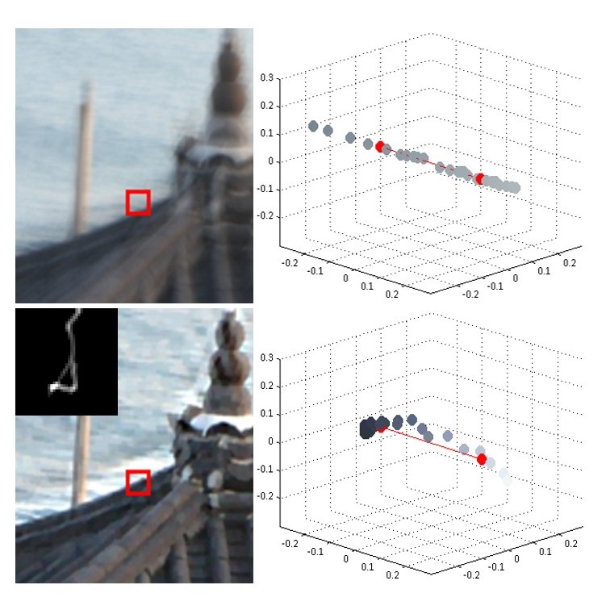
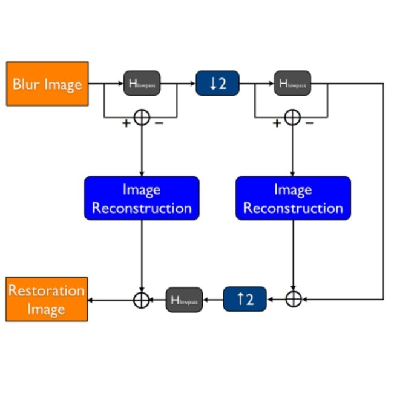
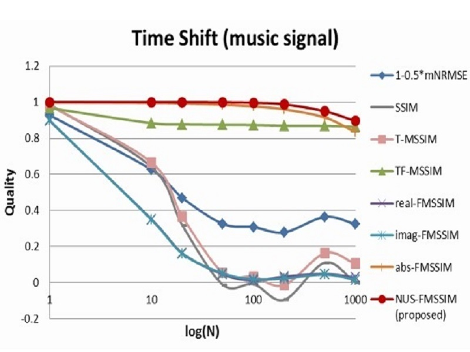
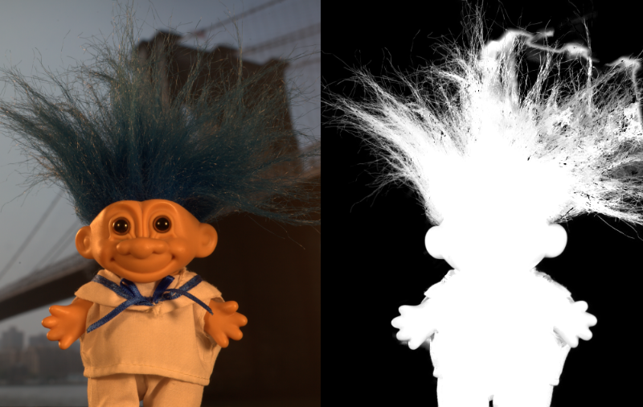
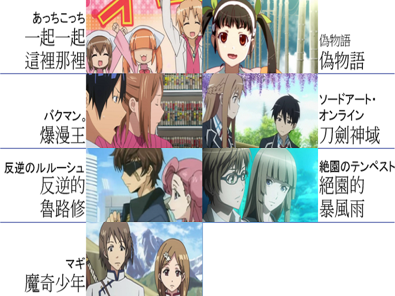

Education
Ph.D in Networking and Multimedia, National Taiwan University, Taipei, Taiwan
Sep. 2014 - present
M.S. in Communication Engineering, National Taiwan University, Taipei, Taiwan
Sep. 2012 - Jun. 2014
B.S. in Electrical Engineering, National Taiwan University, Taipei, Taiwan
Sep. 2008 - Jun. 2012
Publications

Blur Kernel Estimation Using Color-Line Model For Natural Image Deblurring
M.S. Thesis, National Taiwan University, 2014
Image Deblurring
Computer Vision
PDF (To appear)

High Quality Image Deblurring Scheme Using the Pyramid Hyper-Laplacian L2 Norm Priors Algorithm
Proceedings of Pacific-Rim Conference on Multimedia 2013
Image Deblurring
Computer Vision

Improved structural similarity measurement for vocal signals
IEEE International Symposium on Circuits and Systems (ISCAS) 2013
Signal Processing
Projects
NTUSBLeague Record Website
Jul. 2014 - Present
Free Project
Python
Django
江柏宣
website (To appear)

Broken Chinese Zodiac Character Recognition
Dec. 2013 - Jan. 2014
Course Project
Python
scikit-learn
libSVM
Chia-Jung Lin

Natural Image Matting
Jun. 2013 - Jul. 2013
Course Project
MATLAB

Stereo Matching Performance Optimization in OpenCL
Jun. 2013 - Jul. 2013
Course Project
C++
OpenCL
Wei-Chih Tu, Eric Chin

Spectral Rendering
Dec. 2012 - Jan. 2013
Course Project
C++
PBRT
Zen-Pei Tseng

Painting Style Classification
Dec. 2012 - Jan. 2013
Course Project
MATLAB
libSVM
Kun-Wei Han, Pao-Ya Chien
Activity


Leader of Photography Section (攝輯長)
Aug. 2010 - Jul. 2011
NTU Yun-Lin and Chia-Yi Area Alumni Association (台大雲嘉會)

Leader of Activities Section (活動長)
Aug. 2009 - Jul. 2010
NTU Yun-Lin and Chia-Yi Area Alumni Association (台大雲嘉會)